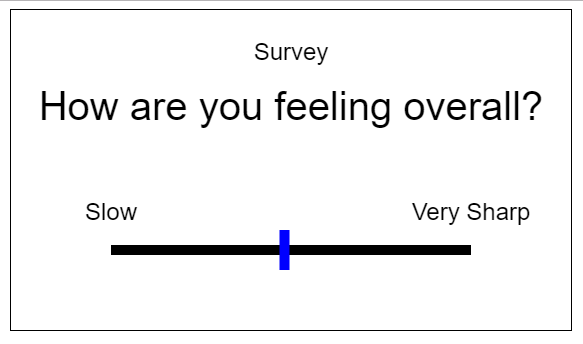
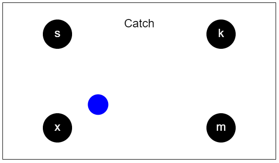
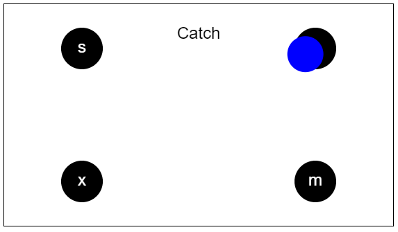
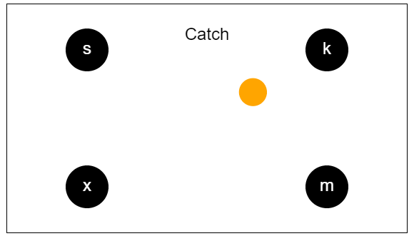
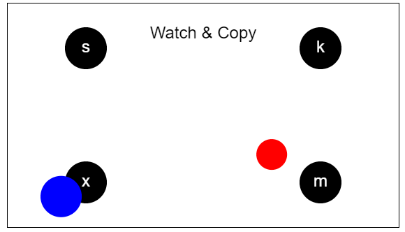
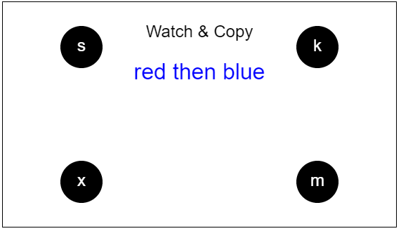
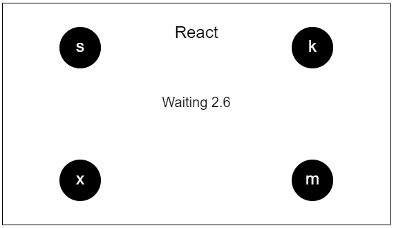
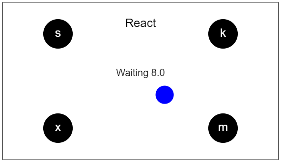
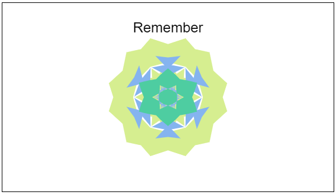
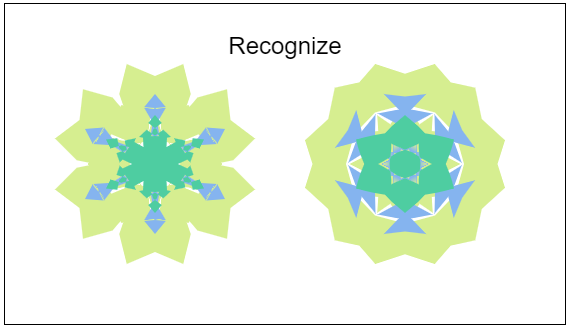

There are five sections to the QCA, each taking from 30s to 2 minutes complete.
| Survey
This section has 3 questions asking about how you are feeling right now.
Give your answer by clicking along the line below the question (click again to move on to the next question if you don’t want to wait). |
 |
| SISL (Serial Interception Sequence Learning)
This task looks like a rhythm-based video game, such as guitar hero, only with no sound. Blue circles will appear in the center of the screen moving outwards towards the corners where there are black circles marked with letters (‘s’, ‘x’, ‘k’, and ‘m’). When the moving circle hits the black target circle, either press the keyboard key on the circle or click at that time with the mouse. If you time your response correctly, a green flash will be shown. It will flash red if you are too early, too late, or press the wrong key. If you are getting all the responses correct, the speed of the moving cues will increase and keep speeding up until it gets hard enough that you are making at least some errors. Every so often the moving cue will be orange instead of blue. When this happens, try to stop your self from making the normal response. For these cues, a correct answer is to do nothing. Periodically, messages will flash up on the screen with information about how you are doing by percent correct, speed and how well you are inhibiting your responses. You don’t need to pay attention to these unless you are curious about your performance. You’ll also see a reference to “SSPA” which is a sequence learning measure. The cues will follow a sequential pattern and in general, we will see that your responses will be more accurate during the pattern. Towards the end of the test, the cues will sometimes stop following the pattern and the SSPA measures how much better you are on the sequence you’ve been practicing. Don’t worry if you notice or try to use the sequence or not. Most people don’t realize the sequence is even there and even if you see it, the cues are generally moving too fast for knowing the sequence to help. |
Examples:

Get ready to press 'x'  Press 'k' now  Don't press the key for Orange cues |
|
SeVi (Sequential visual working memory)
The display will look a lot like the SISL task, but this test isn’t about quick responding, but is about remembering the order of a sequence of cues just seen (a test of “working memory”). There are two phases for each sequence. During “Watch” you’ll see moving cues, both blue and red in color. Hold both the cue location and color in mind. Then during “Respond” you’ll indicate the order of the cues you saw with keyboard or mouse but with a catch – you’ll be asked to report the order of the cues sorted by order, either all the red locations then blue (or blue locations then red). The Watch/Respond will repeat several times. The number of cues you have to keep track of will increase and decrease as you go through the task. You will see a range of sequences including some that are very challenging as well as some shorter ones that should be easier. Try to get as many correct as you can. |

First watch the cues without making any responses, remember the order and colors.
Here it was a blue circle to 'x' then a red circle to 'm'.  On the Copy phase, re-order the cues in your head based on the color order given. From the above, you'd respond 'm' then 'x'. |
|
PVT (Psychomotor Vigilance Task)
The PVT also has the same basic layout as SISL and SeVi, but is a vigilance task. Your will wait and watch for the appearance of a moving blue cue and then press the corresponding key (or use the mouse) as quickly as possible when it does. You’ll be waiting a random amount of time from 1s to 12s and you need to try to stay focused to make as quick a response as you can. This will repeat 20 times. On each one, wait and then respond as fast as you can. |

First, wait and watch for the cue. Ths timer is how long you've been waiting so far.  The cue appears heading for 'm', respond as fast as you can. |
|
Memory
This test measures memory for randomly created visual images that look a bit like what you’d see in a kaleidoscope (and doesn’t look like the other tests). During the first, Study phase, you’ll see 10 novel images that you should study and try to remember. In addition, sometimes an image from earlier in the study phase will appear again. When this happens, press the space bar (or click the image). If you miss a repeat, a message will pop up letting you know. There will be 5 repeats during the study part. Immediately after the study part, there will be a memory test where you’ll see one of the studied items paired with a very similar new image. Click the image you saw during study, or use the ‘1’/’2’ keys to indicate left/right. There will be 10 items on the memory test. |

An example of the kind of image to try to remember.  At test, choose the one you saw before. Here press '2' or click on the right image. |
To try it:
Create a unique user id for yourself and your scores will be tracked for you across each time you run through the tests.
Note that all your test performance is tracked on stored in an online server and will be evaluated research purposes. The goal of our study is to see how these scores change or don't change over time or under different conditions.
Your recent performance will be reported to you as you go and you can see how these different cognitive functions change across the day and across different days.